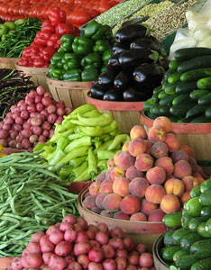

In the United States, there has been a surge of interest in eating fresh, local foods, corresponding with mounting concerns about the climate effects of consuming food from distant places and about the obesity and other health problems associated with junk food diets. This is reflected in the rise in farmers markets, urban gardening and school gardening.
With the fast-growing local foods movement, diets are becoming more locally shaped and more seasonal. In a typical supermarket in an industrial country today, it is often difficult to tell which season it is, because the store tries to make everything available on a year-round basis. As oil prices rise, this will become less common. In essence, a reduction in the use of oil to transport food over long distances - whether by plane, truck or ship - will also localize the food economy.
This trend toward localization is reflected in the recent rise in the number of farms in the United States, which may be the reversal of a century-long trend of farm consolidation. Between the agricultural census of 2002 and that of 2007, the number of farms in the United States increased by 4 percent to roughly 2.2 million. The new farms were mostly small, many of them operated by women, whose numbers in farming jumped from 238,000 in 2002 to 306,000 in 2007, a rise of nearly 30 percent.
Many of the new farms cater to local markets. Some produce fresh fruits and vegetables exclusively for farmers markets or for their own roadside stands. Others produce specialized products, such as the goat farms that produce milk, cheese and meat, or the farms that grow flowers or wood for fireplaces. Others specialize in organic food. The number of organic farms in the United States jumped from 12,000 in 2002 to 18,200 in 2007, increasing by half in five years.
Gardening was given a big boost in spring 2009 when First Lady Michelle Obama worked with children from a local school to dig up a piece of lawn by the White House to start a vegetable garden. There was a precedent. Eleanor Roosevelt planted a White House victory garden during World War II. Her initiative encouraged millions of victory gardens that eventually grew 40 percent of the nation’s fresh produce.
Although it was much easier to expand home gardening during World War II (when the United States was largely a rural society), there is still a huge gardening potential - given that the grass lawns surrounding U.S. residences collectively cover some 18 million acres. Converting even a small share of this to fresh vegetables and fruit trees could make an important contribution to improving nutrition.
Many cities and small towns in the United States and England are creating community gardens that can be used by those who would otherwise not have access to land for gardening. Providing space for community gardens is seen by many local governments as an essential service, like providing playgrounds for children or tennis courts and other sport facilities.
Many market outlets are opening up for local produce. Perhaps the best known of these are the farmers markets where local farmers bring their produce for sale. In the United States, the number of these markets increased from 1,755 in 1994 to more than 4,700 in mid-2009, nearly tripling over 15 years. Farmers markets re-establish the personal ties between producers and consumers that do not exist in the impersonal confines of the supermarket. Many farmers markets now also take food stamps, giving low-income consumers access to fresh produce that they may not otherwise be able to afford. With so many trends now boosting interest in these markets, their numbers may grow even faster in the future.
In school gardens, children learn how food is produced - a skill often lacking in urban settings - and they may get their first taste of freshly picked peas or vine-ripened tomatoes. School gardens also provide fresh produce for school lunches. California, a leader in this area, has 6,000 school gardens.
Many schools and universities are now making a point of buying local food because it is fresher, tastier and more nutritious, and it fits into new campus greening programs. Some universities compost kitchen and cafeteria food waste and make the compost available to the farmers who supply them with fresh produce.
Supermarkets are increasingly contracting with local farmers during the season when locally grown produce is available. Upscale restaurants emphasize locally grown food on their menus. In some cases, year-round food markets are evolving that market just locally produced foods, including not only fruits and vegetables but also meat, milk, cheese, eggs and other farm products.
Food from more distant locations boosts carbon emissions while losing flavor and nutrition. A survey of food consumed in Iowa showed conventional produce traveled on average 1,500 miles, not including food imported from other countries. In contrast, locally grown produce traveled on average 56 miles - a huge difference in fuel investment. And a study in Ontario, Canada, found that 58 imported foods traveled an average of 2,800 miles. Simply put, consumers are worried about food security in a long-distance food economy. This trend has led to a new term: locavore, complementing the better known terms herbivore, carnivore and omnivore.
Concerns about the climate effects of consuming food transported from distant locations has also led Tesco, the leading supermarket chain in the United Kingdom, to label products with their carbon footprint - indicating the greenhouse gas contribution of food items from the farm to the supermarket shelf. Sweden is a recent pioneer in labeling food with its carbon footprint along with its nutritional facts.
As agriculture localizes, livestock production will likely start to shift away from mega-sized cattle, hog and poultry feeding operations. The shift from factory farm production of milk, meat and eggs by returning to mixed crop/livestock operations facilitates nutrient recycling, as local farmers return livestock manure to the land. The combination of high prices of natural gas, which is used to make nitrogen fertilizer, and of phosphate, as reserves are depleted, suggests a much greater future emphasis on nutrient recycling - an area where small farmers producing for local markets have a distinct advantage over massive feeding operations.
In combination with moving down the food chain to eat fewer livestock products, reducing the food miles in our diets can dramatically reduce energy use in the food economy. And as world food insecurity mounts, more and more people will be looking to produce some of their own food in backyards, in front yards, on rooftops, in community gardens and elsewhere, further contributing to the localization of agriculture.
|
 FLICKR/NATALIEMAYNOR Farmers markets re-establish the personal ties between producers and consumers that do not exist in the impersonal confines of the supermarket. In the United States, the number of these markets increased from 1,755 in 1994 to more than 4,700 in mid-2009, nearly tripling over 15 years. |
|
|